Next: 3 The Standard Data
Up: 2 An introduction to
Previous: 2.4 A Second Example
2.5 A Final Example
As a third example, consider the constrained problem in the variables
, 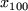 and y
subject to the constraints
and the simple bounds
As before, there are a number of ways of casting this problem in the
form (2.1)-(2.4). We chose to
decompose the problem as follows:
- the objective function comprises two groups, the first of which
uses the non-trivial group function
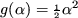. This group contains a single linear element;
the element function is y. There is also a nonlinear element
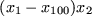. This element function has three
elemental variables,
 ,
,  and
and  , say (with 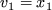,
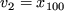 and 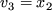); there is a useful transformation
from elemental to internal variables of the form
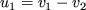 and
, say (with 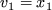,
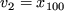 and 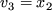); there is a useful transformation
from elemental to internal variables of the form
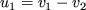 and
 and the element function may then be represented as
and the element function may then be represented as  .
.
 The second group may be considered as a quadratic
objective group, and written as
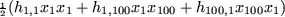,
where 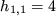 and 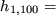
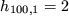.
The second group may be considered as a quadratic
objective group, and written as
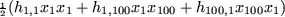,
where 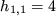 and 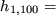
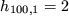.
- The next set of groups,
inequality constraints,
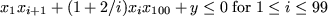 are of the form (2.4) with no lower
bounds.
Each uses
the trivial group
function
 and contains a
single linear element,
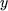, and two nonlinear elements
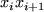 and
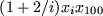. Both nonlinear elements are of the same type,
and contains a
single linear element,
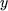, and two nonlinear elements
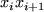 and
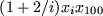. Both nonlinear elements are of the same type,  , for appropriate variables
, for appropriate variables  and
and  and parameter
and parameter  ,
and there is no useful transformation to internal variables.
,
and there is no useful transformation to internal variables.
- The following set of groups,
again inequality constraints,
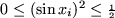 for
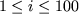, are of
the form (2.4) with both lower and upper bounds.
Each uses the
non-trivial group function
 and contains a
single nonlinear element
of the type 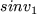 for an
appropriate variable
and contains a
single nonlinear element
of the type 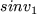 for an
appropriate variable  . Notice that the group types
for these
groups and for the objective function group
are both of the form
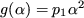, for some parameter
. Notice that the group types
for these
groups and for the objective function group
are both of the form
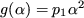, for some parameter
 , and it may prove
more convenient to use this form to cover both sets of groups.
, and it may prove
more convenient to use this form to cover both sets of groups.
- The last group,
an equality constraint,
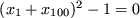,
is of the form (2.3).
Again, this group uses the trivial group function
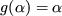 and contains a single linear
element,
 , and a single nonlinear element
of the type
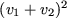 for appropriate elemental variables
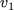 and
, and a single nonlinear element
of the type
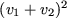 for appropriate elemental variables
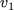 and  . Once
more, a single internal variable,
. Once
more, a single internal variable,
 can be used and
the element is then represented as 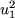.
can be used and
the element is then represented as 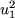.
Thus we see that we can consider our problem to be made up of 201
groups of two different types as well as an quadratic objective group
so we will have to provide our
optimization procedure with function and derivative values
for these at some stage. There are 200 nonlinear elements
of four different types and again this means that we shall have to
provide function and derivative
values for these. As for the previous
example, there is so much structure
to this problem that it would be inefficient to pass the data group-by-group
and element-by-element. Again, we will introduce ways to specify this
repetitious structure using a convenient shorthand.
Next: 3 The Standard Data
Up: 2 An introduction to
Previous: 2.4 A Second Example